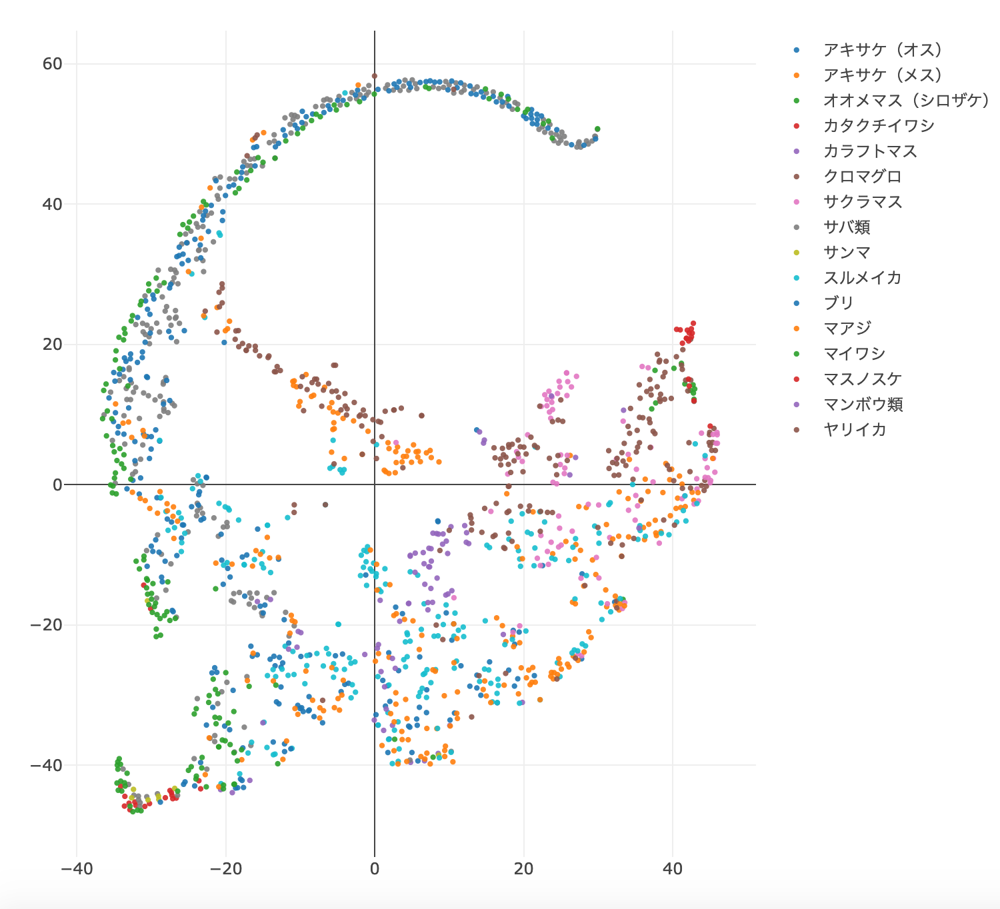
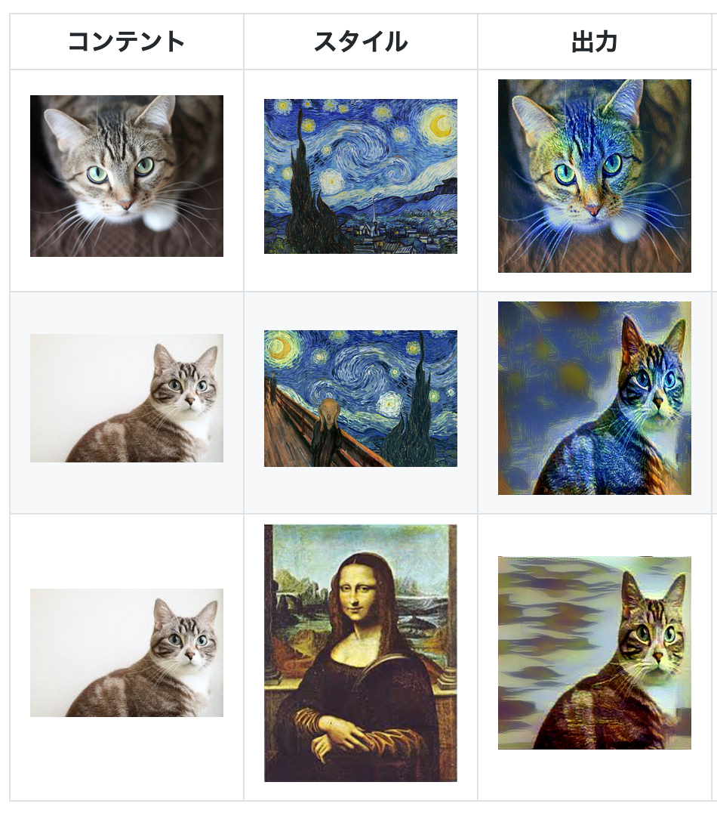
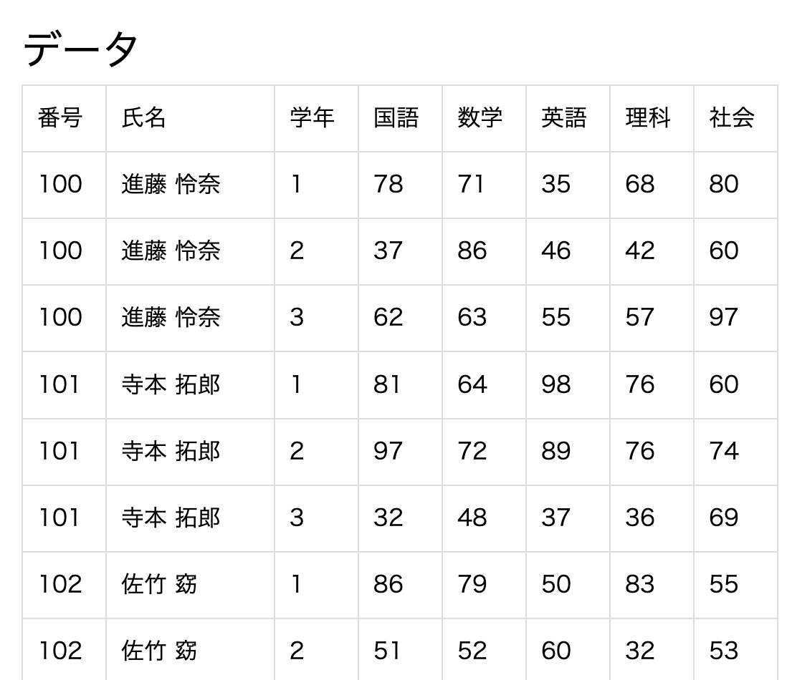
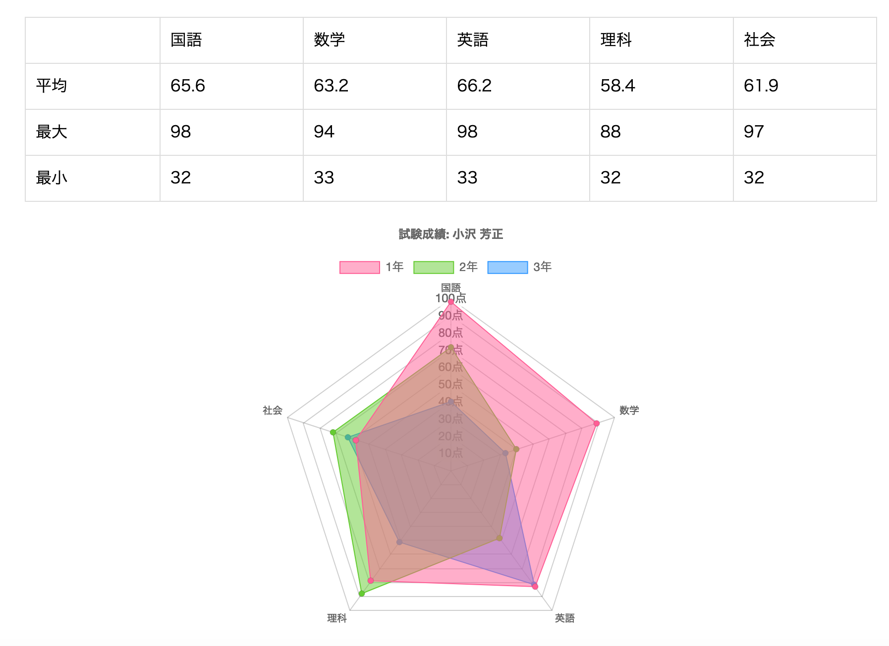
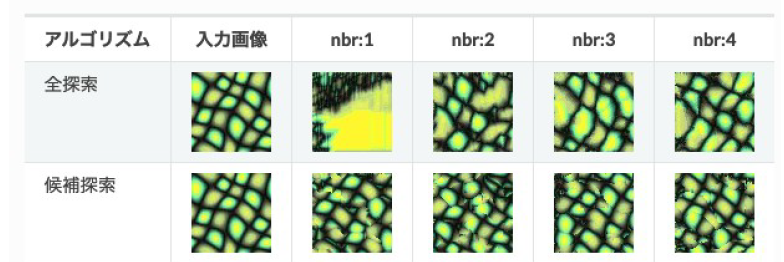

いわゆるポートフォリオ
Table of Contents
- :初更新日
- :最終更新
このサイトはEmacsのorgmodeと fniessen/org-html-themesさんのreadtheorgという素晴らしいスタイルで作られています。(readthedocからのインスパイアだそうです。)上記サイトで公開されているbigblowというそちらも良いスタイルなので機会を見つけて使っていきたいです。
また、ポートフォリオのつもりで書き始めましたが自己紹介みたいになってしまいました。先に謝っておきます。
1 自己紹介
2021修士卒です。就活でよく聞かれた質問をもとに少し自己紹介をしたいと思います。
1.1 プログラミングを始めたきっかけ
まず、プログラミングを始めたきっかけについて。プログラミングを始めたきっかけはパッと思いつくだけでもいくつかあります。2つほど挙げていきます。
- ブラッディ・マンデイ
浅く見えるけれど意外と本質的だと思うきっかけは「ブラッディ・マンデイ」というドラマです。これはウィザード級の天才ハッカーが自身のIT技術を生かして、テロに対抗するという漫画原作のドラマです。これをみて「こんなになんでもできちゃう全てを支配するプログラミングってすげー」というのが割と一番大きなプログラミングに興味を持つきっかけだった気がします。(ちょうどこれを書いている時期に三浦春馬さんについての話を聞きました。対してテレビに興味のない僕でも名前を知っていた数少ない俳優の一人で衝撃を受けました。ここではこのことについて深く書きませんが、ただただご冥福をお祈りいたします。)
また、もう一つのきっかけに本「ハッカーと画家」というものがあります。この本は実は作者が無料でウェブ上で公開していて読めます。単純に面白いのでおすすめです。丁寧に日本語訳をしてくれている人までいます。無料で読めるポール・グレアムの「ハッカーと画家」+αの日本語訳のみのまとめ
このエッセイにはプログラミングを描く人に限らず、ものを作る人なら共感できる様なことがたくさん書いてあります。
例えばプログラミングはスケッチの様に書いては消し、書いては消しのサイクルでより良いものを作っていくのだといった様なことや、ハッキングには周期があり、ある時は新しいプロジェクトに夢中になって、1日16時間それをやり続ける。別の時には何も面白いと感じられない。(これは別に何もしていないというわけではなく、頭の中でアイデアを練る時間が必要であるという意味で書いてあると僕は解釈しています。)とか、ハッカーは、良い道具とともに、おもしろいプロジェクトを欲する、などなどいろいろ共感できることが書いてあります。
中でも本を通して書いてあることの一つに * ハッカーとは、物事の仕組みを理解しデザインする人のことである * というものがあると僕は思っています。僕はこの考え方がプログラミングが好きな人のことを非常に適切に表していると思っています。
この本で書いてあるハッカーのスタンスは僕のプログラミングに対するスタンスと非常に酷似していて強く共感を覚えます。私の仕事に対して持ちたいスタンスがどの様なものかはこの本が最もよく表していると言えるため、採用に際してどんな考えを持っている人か知りたいという場合は、この本を読んでくださると僕が長々話すより良いかもしれません。(幸い無料で読めますし)
1.2 どんな仕事をしたいのか
データ分析に関わることを仕事にしていきたいと考えています。
特に * 多変量な(多次元な)方向性の持つデータの特徴を低次元に落とし込み、可視化・予測につなげていきたい * というものを大きな目標(ビッグピクチャー)として一つ持っています。
理由としては上記でも挙げた * ハッカーとは、物事の仕組みを理解しデザインする人のことである * という考え方を持っているという点がつながってくると思います。
自身の興味の対象として大きく分けて二つ「物事を自動化して楽に作業したい」「どうしてその物事が起きているのか、裏にある法則を知りたい」というものが挙げられます。
そのため「データから何らかの現象の法則性を掴み、それを予測につなげることで何か今までの面倒が解消される」といったことに繋げていきたいというモチベーションがあります。
例えば例を上げると、「人々の購買データから各人がどの様な属性(傾向)を持つ人かを分析・可視化しそれによっておすすめの商品を提案する」だったり、「特定の何かを事前に良いものか悪いものか自動で判断して手間を省くなど(例えばスパム判定や広告の効果判定など)」といったものが例として挙げられるのかなと思います。
また、それを支えるデータ基盤の整備というものにも魅力を感じています。これは単純に便利なものを作って誰かの役に立つのはいいものだという考えからです。
このドキュメントを書いて自分の考えを整理していることからもわかる様に、物事を整理していくのは割と好きです。
現在、そのための実績積みと勉強をがんばっていきます。とりあえずそういったデータ分析に関するお仕事の話があったら気軽に話だけでも聞きたいです。
2 持っているスキル
2.1 言語
熟練度順に上から
- Python
- SQL
- Javascript
- html+css
- C系
2.2 分野
- 機械学習
- 画像処理
- データマイニング
- 情報可視化
- 自然言語処理(勉強中)
3 実績
こういう実績アピールは苦手なのですが、ちょっとずつ書いていきます
3.1 データ分析コンペ
3.1.1 SIGNATE
SIGNATEという恐らく日本では最大手のデータ分析コンペを開催しているサイトでの戦績です。SIGNATEプロフィール
| コンペティション名 | 開催期間 | 戦績 | 備考 |
|---|---|---|---|
| ひろしまQuest2020#stayhome【コース予測部門】 | 2020/4/27〜2020/7/28 | 41 位 / 258人投稿 | 銀メダル |
| ひろしまQuest2020#stayhome【球種予測部門】 | 2020/4/27〜2020/7/28 | 141 位 / 481人投稿 | 60%Line以上 |
3.2 競技プログラミング
現在かなりやる気を落としていますが(データ分析のコンペと研究に時間を使いたいので)、競技プログラミングについても取り組んでいます。
3.2.1 AtCoder
3.2.2 yukicoder
yukicoderに関してはgithubに解いた問題の解法とメモを残しています。
3.2.3 ライブラリ
正直ライブラリというほどのクオリティのものではないですが、汎用的に使えそうなコードをgithubに少し残しています。
3.3 製作物
3.3.1 魚の特徴量可視化ツール
卒業研究で作成した魚の特徴量を可視化するツールです。
- データ提供元であるいわて大漁ナビからデータをスクレイピングしてくるスクリプトを組み、自前のローカルのサーバーにデータを保存する。
- データに対して各種前処理を行う。
- t-SNEというアルゴリズムを用いて高次元のデータである漁業のデータを低次元の特徴ベクトルに落とし込む。
- .htmlという形でインタラクティブに操作できるツールという形で提供する。
- 何らかのインサイトを得る。
といった流れで作成した卒業研究で作成した魚の特徴量を可視化するツールです。
例の画像にある右のラベルをクリックすると表示・非表示を切り替えられたり、各データポイントにカーソルを合わせるとより詳細な情報を得たりすることができます。
イメージサンプル:

3.3.2 運動不足支援アプリケーション(ゲーム)
4人で開発しました。Unreal Engine4とKinectを用いたアプリケーションです。
リアルのプレイヤーが足踏みやジャンプなどをするとKinectがセンシングし、ゲーム内のキャラクターの動きが対応して動き出すというものでアスレチック感覚でランニングを楽しんでもらって運動不足解消につなげよう！というコンセプトで作られたものでした。
自分はUnreal Engineに関する主な処理を全て担当し、マップ作りからオブジェクトの当たり判定、のせた動画には出ていませんがタイトル画面からゲーム画面への遷移などといったUIを担当しました。
- 開発途中のデモビデオ
実際にプレイ中の動画はリアルのプレイヤーが写ってしまうので載せれませんが、代わりにイメージとして開発中の動画を載せてみます。
https://drive.google.com/file/d/1POcLBevPci5pVSi_N1sAFMu3m7rfx3a3/view?usp=sharing
- github URL
一応githubのURLを貼っておきますが、作成終盤でのKinect対応の作業はfork元でやったので最新版ではないはずです。
https://github.com/pop-ketle/FusionDesignProject
3.3.3 Javascriptで書いたシューティングゲーム
基本、杉本雅弘さんの「ゲーム＆モダンJavaScriptで2倍楽しい］グラフィックスプログラミング入門 ——リアルタイムに動く画面を描く。プログラマー直伝の基本」をもとに実装したものですが一応、wasd対応したりリスタートにRキー対応、ゲーム中に流れる背景など個人の工夫も少し入れています。
この本からは内積と外積の使用によるホーミングミサイルの実装など内積外積を用いたプログラミングを学びました。
シューティングゲーム
3.3.4 style_transfer
論文の再実装ではありますが、Kerasで作成したCNNを用いたオリジナル画像にスタイル画像の特徴を載せるというvgg16を用いたモデルです。
この程度のモデルなら実装できるというアピールのために作りました。
https://github.com/pop-ketle/style_transfer

3.3.5 chart.jsを用いたグラフ作成アプリ
.csvファイルの置いてあるサーバーにアクセスしてデータテーブルを作成、テーブルの各行をクリックするとグラフや情報が表示されるchart.jsの練習で作ったアプリです。
例の画像:


3.3.6 テクスチャ合成
手ごろな画像が残っていなかったので微妙なところですが、
- 出力テクスチャを入力テクスチャのランダムなピクセルを割り当てることで初期化する。この時割り当てたピクセルを保存しておく。
- 出力テクスチャ上で全探索と同様にL字型の近傍群を探索する。
- L型近傍群の各ピクセルには出力テクスチャ上のどのピクセルの色が割り当てられたかという情報が保存されている。この情報を用いて出力テクスチャに割り当てる候補となるピクセルを限定する。よって最大候補数は近隣ピクセル群のピクセル数となる。
- 候補となる入力テクスチャ上の各候補ピクセル群と出力テクスチャ上のピクセル群を比較する。比較には、各ピクセルの差分の二乗和を用いる。もし、近隣ピクセル群が入力テクスチャをはみ出した場合、入力テクスチャ内に治るランダムな位置に候補ピクセルを変更する。
- 差分の二乗和がもっとも小さかった入力テクスチャのピクセルを出力テクスチャに割り当て、割り当てたピクセル座標も記録する。
といったアルゴリズムで入力画像から合成して作成した画像です

3.4 論文
- Kenta MARUYAMA, Katsutsugu MATSUYAMA, A Method of Finding Characteristic Ocean-Satellite-Image Groups using Autoencoder, International Workshop on Advanced Image Technology 2020 (IWAIT 2020), 2020 (IWAIT公式HP), (SPIE.DIGITAL LIBRARY)
3.5 資格
- 基本情報技術者
- TOEIC IP 715点
4 技術系ブログ
- github
- Qiita
現在はまだ記事を書き始めたばかりでほとんど参考にならないかもしれませんが、今後書いていく予定です。
https://qiita.com/pop-ketle
- はてなブログ
技術系の何か面倒な問題が起きてそれを解決した時に次同じ問題で困らない様に解決策をメモする感じで主に利用しているブログです。
https://pop-ketle.hatenablog.com/
5 連絡先
- gshrhg@gmail.com
6 私的メモ
何か詰まった時のメモ(ポートフォリオに書くものではない気もしますが)
- PythonのNoneの比較はisを使う。
- pandasのNaNはfloatです。np.isnan()で判定しましょう。